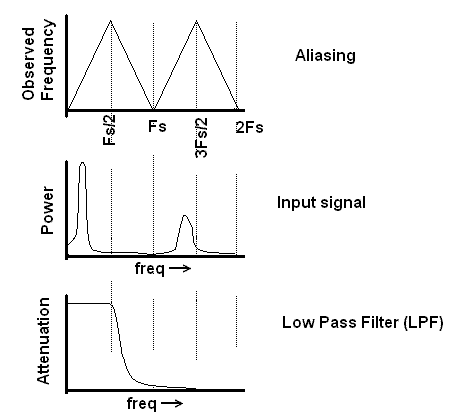
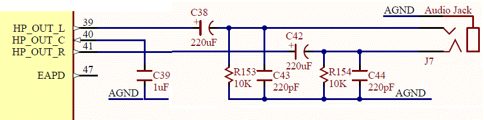

Filtering
Whenever you sample an analog signal at discrete times, you are going
to run into aliasing problems with frequency folding. This creates
problems in sampled systems like an ADC because noise anywhere in
the spectrum will fold back into our sampling region as shown in the
figure below.

In order to address this problem we will utilize a principle
called attenuation. Attenuation is the process of changing the
amplitude of a waveform without changing its frequency. The
amount of attenuation is quantified in terms of decibels.
dB = 20 * log (V_out/V_in)
| V_out/Vin | dB
|
| 1 |
|
| 1/10 |
|
| 1/100 |
|
| 1/1000 |
|
| 1/256 |
|
| 1/1024 |
|
| | -3dB
|
| | -68dB
|
Question If you input a 1v sin wave into a circuit
that attenuated it by -40dB, what would the amplitude of the
output waveform be?
Question If you input a 1v sin wave into a circuit
that attenuated it by -68dB, what would the amplitude of the
output waveform be?
Question If you reduced a signal by a factor of 1/256,
how many dB would you need to attenuate it by?
Low Pass Filter
We will use a circuit called a low pass filter to attenuate
signals. It has some nice properties which make it well suited
to this task. You can build an analog low pass filter by
putting a resistor and capacitor in parallel.
Our ATLYS boards
have this circuit arrangement as shown by the pairs (R153, C43)
and (R154,C44) in the schematic below.

Strategic parameters for this first order filter include...
- Corner frequency: 1/6.28*R153*C43 = 2854hz
- Roll off: -20dB/decade
For a Low Pass filter, the attenuation applied to an input signal depends
on the input frequency. This relationship is characterized in the
filters frequency response graph. Take a moment to look at the following
link.
Before moving on, its important to really understand the slope
of the roll-off, -20dB/decade. A decade is a factor of 10,
2 decades is a factor of 100. If you increase a 10kHz waveform
by 1 decade then you would have a 100kHz waveform. If you
increases a 2kHz waveform by 2 decades then you would have a
200kHz waveform. If you increased a 2KHz waveform by 2.5 decades
you would increase it frequency by a factor of 10^2.5 = 316,
resulting in a 632KHz waveform.
Filter Design Problem
Lets test out understanding of all these concepts with a filter
design problem.
- Aliasing:
Your sampling an analog signal at 48kHz. List all the frequencies
that will look like 2kHz signals.
- Decades:
A first-order LPF has a cutoff frequency of 2kHz. Describe
the attenuation of a 80kHz input signal in decibels and as
a ratio of output voltage to input voltage.
- ADC convert:
You are working with a 10-bit ADC and would like
to attenuate some frequency below 1/2 ULP. How many dB will be
required to achieve this?
- Sampling frequency:
Given:
- Signal of interest is 0-2KHz
- 2nd order filter
- 10-bit ADC
What is the minimum sampling rate?
-
Sampling frequency:
- Signal of interest is 0-2KHz
- 1st order filter
- 8-bit ADC
What is the sampling rate?
- Sampling frequency:
Given:
- Signal of interest is 0-2KHz
- 1st order filter
- 10-bit ADC
What is the minimum sampling rate?
- Filter specs:
Given:
- Signal of interest is 0-2KHz
- 8-bit ADC
- Maximum possible sampling rate of 80KHz
What order filter do we need?
- Signal bandwidth:
Given:
- 16-bit ADC
- 4th order filter
- Sampling frequency 250kHz
What is the maximum frequency of the signal of interest?
{kind=link}